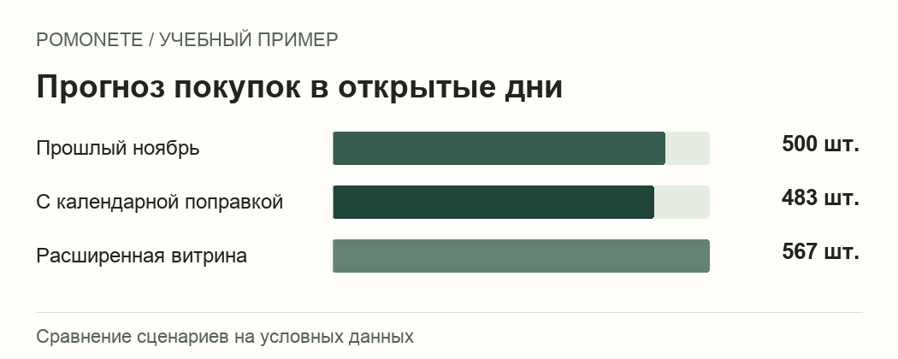

Сезонный прогноз Яндекс Маркета по сравнимым дням в наличии
Как селлеру пересчитать прошлогодний спрос на новый календарь без механического переноса месячного итога.
В магазине новогодних коробок селлер Яндекс Маркета собирает бюджет на следующий сезон. Сравнение календарных месяцев мешает: в прошлом году часть времени товар пропадал. Нормировка по дням, когда покупатель фактически видел предложение, даёт более аккуратную отправную точку.
Какие даты сопоставить
Отметьте дни отсутствия, скидки и изменение срока доставки. Разделите сопоставимые будни и выходные, если цены и часы заметно отличаются. После этого пересчитайте типичную интенсивность на реально доступный интервал. При открытой статистике по часу повторите для неполных дней.
Чтобы пересобрать расчёт «Прогноз покупок в открытые дни» для своего магазина, перенесите в него исходные числа. В формуле A обозначает «заказано в опорном календаре», B обозначает «сравнимые дни в наличии», C обозначает «план доступных дней». Сначала оценивается интенсивность на единицу базы, затем она применяется к новому объёму. Допущение о постоянной интенсивности требует проверки. Запишите рядом период и охват каждого среза. Если для одной строки известна только оценка, оставьте пояснение непосредственно рядом с ней: по итоговой цифре источник уже не восстановить.
Прогноз покупок в открытые дни = A ÷ B × C
| Условие | Заказано в опорном календаре | Сравнимые дни в наличии | План доступных дней | Прогноз покупок в открытые дни |
|---|---|---|---|---|
| Прошлый ноябрь | 480 | 24 | 25 | 500 шт. |
| С календарной поправкой | 420 | 20 | 23 | 483 шт. |
| Расширенная витрина | 420 | 20 | 27 | 567 шт. |

В сценарии «Прошлый ноябрь» в формулу подставляем заказано в опорном календаре = 480, сравнимые дни в наличии = 24, план доступных дней = 25. Получается 500 шт.. В истории удалены дни, когда нужный комплект был недоступен почти всю смену.
В сценарии «С календарной поправкой» в формулу подставляем заказано в опорном календаре = 420, сравнимые дни в наличии = 20, план доступных дней = 23. Получается 483 шт.. Из выборки дополнительно убрали редкую распродажу, под новый месяц заложены рабочие даты.
В сценарии «Расширенная витрина» в формулу подставляем заказано в опорном календаре = 420, сравнимые дни в наличии = 20, план доступных дней = 27. Получается 567 шт.. При плановой поставке предложение будет доступно в большем числе дней.
Если «Прошлый ноябрь» взять за исходную точку, «С календарной поправкой» меняет показатель «прогноз покупок в открытые дни» на -17 шт., а «Расширенная витрина» на 67 шт.. Между двумя последними строками разница составляет 84 шт. при вычитании второй из третьей. Смотрите, какой именно вход изменился между строками. Если менялись объём и условия одновременно, итог сравнения относится ко всему сочетанию.
В пересчёте на исходное значение разница второй строки составляет -3,4%. Здесь в знаменателе модуль первого результата, 500 шт.. Для показателя в процентах рядом сохраните и абсолютную разницу в процентных пунктах. Для малого исходного значения процентный скачок может оказаться крупным даже при скромном практическом эффекте. В рабочем отчёте оставьте оба исходных значения, чтобы при расширении выборки можно было пересчитать изменение.
Где сработает ранний пик
Покупатели могут начать подготовку раньше календарного месяца, чем в прошлый сезон. Сравните недели относительно даты события. Привяжите спрос к периоду, когда комплект нужен, и проверьте сдвиг последних нескольких недель, а не только сумму.
Для исходной выборки пригодится такой набор материалов: история продаж, журнал остатков и даты фактических приходов. Зафиксируйте строки и границы периода, по которым собирался показатель «прогноз покупок в открытые дни». Копию выгрузки держите рядом с рабочим расчётом. По ней коллега сможет проверить, что строку отнесли к нужному сценарию, а единица измерения сохранилась при переносе.
В историю поставок запишите обещанную и фактическую дату, момент доступности товара и интервал, в котором возник недозаказ. Разовые всплески спроса и дни без товара полезно отмечать отдельно. Когда данных мало, прогноз на ближайший горизонт лучше держать несколькими уровнями и привязывать каждый к своему действию. При высокой неопределённости небольшая партия с возможностью докупки даёт другую экономику, чем дешёвая крупная партия с долгим ожиданием.
Что сильнее всего меняет результат
Возьмём сценарий «С календарной поправкой» с результатом 483 шт.. В нём последовательно изменим «заказано в опорном календаре», «сравнимые дни в наличии», «план доступных дней». Для каждого входа шаг близок к 10% его исходной величины, целые значения округлены. После каждого опыта возвращаем остальные числа к исходным. Так можно выяснить, какой вход уточнять первым, если перед решением мало времени.
- «Заказано в опорном календаре» меняется с 420 на 462. При прежних остальных входах получается 531,3 шт., сдвиг составляет 48,3 шт..
- «Сравнимые дни в наличии» меняется с 20 на 22. При прежних остальных входах получается 439,09 шт., сдвиг составляет -43,91 шт..
- «План доступных дней» меняется с 23 на 25. При прежних остальных входах получается 525 шт., сдвиг составляет 42 шт..
При выбранных шагах самый крупный сдвиг дал параметр «заказано в опорном календаре»: 48,3 шт.. Если в магазине эта величина меняется в узком диапазоне, подставьте обе его границы. Для связанных условий добавьте отдельную строку с одновременным изменением входов и поясните их связь в примечании.
В условиях равного календаря всё равно могут меняться цена, остатки и трафик. Проверьте другой сезон с похожими условиями и замерьте фактическую ошибку модели. Неиспользовавшийся резерв снизит результат, если его придётся распродавать после праздника.
Что записать в смету закупки
Разложите рассчитанные штуки по датам прихода и добавьте отдельный объём для запасного сценария. Проверьте, успеете ли выставить дополнительные позиции вовремя. Если предсказание зависит от одного необычного дня, оставьте диапазон.
На очередном пересмотре отметьте, какие сроки реализовались и какой был спрос в дни с доступным запасом. Оценку качества считают на событии, которое наступило после составления прогноза. Так проще отделить неточность метода от изменившейся доступности поставщика. Храните старые допущения: когда рынок меняется, восстановить причину размера закупки можно по сохранённым датам и объёмам.
Оставьте в рабочей таблице причину выбора. Когда селлеры Яндекс Маркета возвращаются к расчёту «прогноз покупок в открытые дни», им пригодятся полученное значение, ответственный и дата пересмотра. Если в решении использовался сценарий «С календарной поправкой», перенесите вместе с ним допущения. При обновлении источников сначала проверьте одну исходную строку и только потом пересчитывайте сводку.